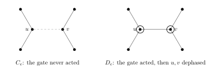

Abstract
We study a graph-state fault-identification problem in which the graph and a suspected edge are known. Given copies of the delivered state, the task is to decide whether the entangling gate on that edge never acted or acted before the two endpoint memories dephased. The two failures have identical statistics for every stabilizer of the intended graph. We characterize the missing Pauli information exactly: a Pauli distinguishes the two states if and only if it stabilizes the graph with the edge removed but not the intended graph. Consequently, a region can carry distinguishing information exactly when it supports such a failed-graph stabilizer; the two endpoints alone are generically insufficient. With residual endpoint coherence \(g\), target-stabilizer data require \(\Theta(g^{-2}\log(1/\delta))\) copies. Under a weight-three cap, every missing edge of a wheel \(W_n\), \(n\ge8\), is identified from full product-measurement outcomes in at most three settings, whereas target-stabilizer statistics cannot identify the edge at any number of settings.
1. Introduction
Graph states place a qubit at each vertex and apply an entangling gate along each edge [1]. In a network or modular processor, a missing entangling operation calls for bond repair or rerouting, while memory dephasing calls for memory reset. After a bond is flagged, can measurement data determine which failure occurred?
Let \(G\) be the intended graph and let \(e=(u,v)\) be the suspected edge. We compare \[C_e = |G-e\rangle\langle G-e|, \qquad D_e = \Delta_{Z_u}\Delta_{Z_v}\bigl(|G\rangle\langle G|\bigr),\] where \(\Delta_{Z_w}\) denotes complete dephasing of qubit \(w\) in the \(Z\) basis.
Definition 1.1 (Bond repair problem). Given copies of a state promised to be either \(C_e\) or \(D_e\), identify which failure occurred.
We restrict to product measurements in single-qubit Pauli bases on independent copies and compare two records from the same measurements: the complete outcomes and the expectation values of stabilizers of the intended state \(|G\rangle\). The latter record is natural for graph-state verification and graph-diagonal characterization [11], but may discard the failure mechanism.
Our first result is an exact characterization of that lost information. Write \(S(G)\) for the stabilizer group of \(|G\rangle\).
Theorem 1.2 (Main result). For every graph \(G\) and every edge \(e\), the states \(C_e\) and \(D_e\) have the same expectation value on every element of \(S(G)\). Moreover, for every Pauli observable \(P\), \[\operatorname{Tr}(P\,C_e)\ne\operatorname{Tr}(P\,D_e) \quad\Longleftrightarrow\quad P\in\pm S(G-e)\setminus\pm S(G).\]
Target-stabilizer measurements therefore cannot identify the failure mechanism, even with arbitrarily many copies. The distinguishing Paulis are precisely the stabilizers created by removing the edge.
Corollary 1.3 (Endpoint measurements are generically insufficient). Measurements confined to \(u\) and \(v\), even full two-qubit tomography, distinguish \(C_e\) from \(D_e\) if and only if \(u\) or \(v\) is a leaf, or \(u\) and \(v\) have the same neighbors outside the edge \(e\).
For a bulk edge in a path, cycle, grid, or irregular graph, neither condition typically holds.

1.1 Partial dephasing
If the endpoint memories retain coherences \(\lambda_u,\lambda_v\) and \[g=\max\{|\lambda_u|,|\lambda_v|\},\] then the largest target-stabilizer contrast is \(g\), and distinguishing the two failures with error probability at most \(\delta\) requires and is achieved with \[\Theta\!\left(g^{-2}\log\frac1\delta\right)\] copies when only target-stabilizer statistics are retained (Theorem 3.2); the exact collision occurs at \(g=0\).
1.2 How many local Pauli settings are needed?
A measurement setting chooses one Pauli basis \(X\), \(Y\), or \(Z\) at each qubit; the same outcomes estimate all compatible correlations. We ask how many settings identify a missing edge and how the answer changes when only target-stabilizer statistics are kept.
A weight cap makes the difference qualitative because local noise suppresses high-weight correlators. Wheels give an infinite separation.
Theorem 1.4 (Fixed-weight separation). For every wheel \(W_n\) with \(n\ge8\), weight-three observables identify every single missing edge from the full product-measurement outcomes in exactly \(\chi(C_{n-1})\le3\) settings, while no finite number of settings suffices using only target-stabilizer statistics.
On \(W_8\), the all-\(X\) setting contains no nontrivial target stabilizer, yet its full outcome distribution identifies the missing edge.
For the promise family \(\{|G\rangle,C_e,D_e:e\in E\}\), a collection of settings succeeds exactly when its target-stabilizer information identifies the edge and every edge has a compatible Pauli in \(\pm S(G-e)\setminus\pm S(G)\) (Theorem 4.1). This gives two settings for every bipartite graph (Theorem 6.2). A connected graph is one-setting diagnosable exactly when it is a star (Theorem 7.3).
Under local depolarizing attenuation of strength \(f\), let \(d_e^{\rm fail}\) be the minimum weight of a Pauli in \(\pm S(G-e)\setminus\pm S(G)\). For fixed \(G,e\), the optimal copy complexity is \[\Theta_G\!\left(f^{-2d_e^{\rm fail}}\log\frac1\delta\right)\] in the high-noise limit, even allowing collective measurements (Proposition 8.2).
1.3 Related work
The closest problem in spirit is hidden cut [2]: the state is promised to factor across an unknown bipartition, which must be identified from copies. Hinsche, Eisert, and Carrasco [3] place hidden cut and stabilizer-group learning in an abelian StateHSP framework. In our setting the graph and suspected edge are known, and the unknown is the failure mechanism.
Other work learns an unknown graph state from product measurements [4], infers network topology from local measurements [9], or verifies a known graph state [5, 6, 7, 8]. Graph-diagonal characterization and noise learning [10, 11, 12] need not identify the physical failure mechanism.
2. Graph states and product Pauli measurements
2.1 Target stabilizers and graph-basis diagonals
Let \(G=(V,E)\) be a simple graph on \(n=|V|\) qubits, \(\Gamma_G\) its adjacency matrix over \(\mathbb{F}_2\). The graph state \(|G\rangle\) [1] is the joint \(+1\) eigenstate of the generators \(K_a=X_a\prod_{b\in N(a)}Z_b\), and for \(A\subseteq V\) we write \(s_A=\prod_{a\in A}K_a\), so that \(S(G)=\{s_A:A\subseteq V\}\) with binary label \(\ell_A=(\mathbf 1_A,\Gamma_G\mathbf 1_A)\). The local Pauli of \(s_A\) at qubit \(q\) is \(X,Y,Z,I\) according to \((\mathbf 1_A(q),(\Gamma_G\mathbf 1_A)(q))=(1,0),(1,1),(0,1),(0,0)\); in particular the \(X/Y\)-support of \(s_A\) is exactly \(A\). We use \(K_A^G\) and \(s_A\) interchangeably for the target stabilizer indexed by \(A\). For \(a\in\mathbb{F}_2^V\), define \(|G_a\rangle=Z^a|G\rangle\); these states form the target graph basis.
If \[p_a=\langle G_a|\rho|G_a\rangle\] is the diagonal of \(\rho\) in the graph basis, then the target-stabilizer expectations and the graph-basis diagonal are Fourier transforms of one another: \[\langle K_A^G\rangle_\rho = \sum_{a\in\mathbb{F}_2^n}(-1)^{a\cdot \mathbf 1_A}p_a, \qquad p_a=2^{-n}\sum_{A\subseteq V}(-1)^{a\cdot \mathbf 1_A}\langle K_A^G\rangle_\rho.\] Thus two states agree on every target stabilizer exactly when they have the same diagonal in the target graph basis.
2.2 Missing-edge signatures
If the entangling gate at \(e=(u,v)\in E\) never acted, the delivered state is \(|G-e\rangle\). For missing-edge identification we use \[\mathcal H(G)=\{\text{missing edge }e:e\in E\}\cup\{\varnothing\},\] where \(\varnothing\) is the no-defect hypothesis. Target stabilizers record an edge deletion through which of their supports meet its endpoints.
Lemma 2.1 (Missing-edge signature). For every \(A\subseteq V\) and every \(e=(u,v)\in E\), \[\sigma_e(s_A):=\langle G-e|\,s_A\,|G-e\rangle=\mathbf 1\!\left[A\cap\{u,v\}=\emptyset\right], \qquad \sigma_\varnothing(s_A)=1 .\]
Proof. If \(A\cap\{u,v\}=\emptyset\), the generators \(K_a\) of \(G\) and \(G-e\) coincide for every \(a\in A\) (only the endpoint generators change under edge deletion), so \(s_A\in S(G-e)\) and the expectation is \(+1\). If \(v\in A\) (the case \(u\in A\) is symmetric), pair \(s_A\) against the stabilizer \(K_u^{G-e}\in S(G-e)\) with label \((e_u,\Gamma_{G-e}e_u)\): the symplectic form gives \[\mathbf 1_A\cdot\Gamma_{G-e}e_u+(\Gamma_G\mathbf 1_A)\cdot e_u =(\Gamma_{G-e}\mathbf 1_A)_u+(\Gamma_G\mathbf 1_A)_u =\mathbf 1[v\in A]=1,\] so \(s_A\) anticommutes with a stabilizer of \(|G-e\rangle\) and its expectation vanishes. ◻
We say \(s_A\) separates two hypotheses if its signatures under them differ; concretely, \(s_A\) separates two missing edges \(e\neq e'\) iff \(A\) meets exactly one of them, and separates \(\varnothing\) from \(e\) iff \(A\) meets \(e\).
2.3 Product Pauli measurement settings
A measurement setting is a choice \(\beta:V\to\{X,Y,Z\}\) of one Pauli basis at each qubit. A Pauli operator is compatible with \(\beta\) if, on each qubit, it is either the identity or the Pauli chosen by the setting. Its expectation can then be estimated by multiplying the corresponding local outcomes. We write \[M(\beta)=\{s\in S(G): s\text{ is compatible with }\beta\}\] for the target stabilizers accessible in the setting.
If the complete product-measurement outcomes are kept, the accessible information is larger than \(M(\beta)\). Define the compatible product-Pauli set \[\mathcal P(\beta)=\left\{P_A^\beta:=\prod_{v\in A}\beta(v):A\subseteq V\right\}.\] If the local outcomes are \(y\in\{\pm1\}^V\), Fourier inversion gives
\[p_\rho^\beta(y)=2^{-n}\sum_{A\subseteq V}\left(\prod_{v\in A}y_v\right)\operatorname{Tr}(P_A^\beta\rho). \tag{1}\]
Hence two states have identical outcome distributions in setting \(\beta\) exactly when they agree on every compatible Pauli in \(\mathcal P(\beta)\).
The target stabilizers compatible with a setting have a simple linear description.
Lemma 2.2 (Target stabilizers compatible with one setting). For a setting \(\beta\), let \(M_\beta\) be the \(\mathbb{F}_2\)-matrix whose row at vertex \(v\) is \[m_v(\beta)= \begin{cases} \Gamma_v,& \beta(v)=X,\\ \Gamma_v+e_v,& \beta(v)=Y,\\ e_v,& \beta(v)=Z, \end{cases}\] where \(\Gamma_v\) is the \(v\)th row of \(\Gamma_G\), and let \(C_\beta=\ker M_\beta\subseteq\mathbb{F}_2^V\). Then \(M(\beta)=\{s_A:\mathbf 1_A\in C_\beta\}\). In particular \(M(\beta)\) is a subgroup of \(S(G)\) and its support vectors form the binary linear code \(C_\beta\).
Proof. Measurability of \(s_A\) at \(v\) requires its local Pauli to lie in \(\{I,\beta(v)\}\). By the label formula of Section 2, the local Pauli at \(v\) has \(x\)-bit \(\mathbf 1_A(v)\) and \(z\)-bit \((\Gamma_G\mathbf 1_A)(v)\), so the requirement is \((\Gamma_G\mathbf 1_A)_v=0\) for \(\beta(v)=X\), \((\Gamma_G\mathbf 1_A)_v+\mathbf 1_A(v)=0\) for \(\beta(v)=Y\), and \(\mathbf 1_A(v)=0\) for \(\beta(v)=Z\): exactly \(m_v(\beta)\cdot\mathbf 1_A=0\). ◻
3. Identifiability before measurement complexity
Lemma 2.1 can localize a missing edge from target stabilizers. It does not identify the failure mechanism.
For a Pauli \(P\), define full dephasing by \(P\) as \(\Delta_P(\rho)=\frac12(\rho+P\rho P)\). For an edge \(e=(u,v)\), independent endpoint dephasing is \(\Delta_{Z_u}\Delta_{Z_v}\).
Theorem 3.1 (Severed edge versus endpoint dephasing). Let \(e=(u,v)\in E(G)\) and \(G'=G-e\). For every \(K_A^G\in S(G)\), \[\operatorname{Tr}\!\left(K_A^G |G'\rangle\langle G'|\right) = \operatorname{Tr}\!\left(K_A^G\,\Delta_{Z_u}\Delta_{Z_v}(|G\rangle\langle G|)\right).\] Therefore the two states have identical graph-basis diagonals with respect to \(G\).
Proof. Deleting the intended edge is equivalent to applying \(CZ_{uv}\) once more to the target graph state. Using \[CZ_{uv}=\tfrac12\big(I+Z_u+Z_v-Z_uZ_v\big),\] we obtain \[|G-e\rangle=\tfrac12\big(|G\rangle+Z_u|G\rangle+Z_v|G\rangle-Z_uZ_v|G\rangle\big).\] The four terms are orthogonal target graph-basis states and have equal modulus. Hence the target graph-basis diagonal of \(C_e\) is the uniform distribution on these four labels. Independent full endpoint dephasing produces exactly the incoherent uniform mixture of the same four graph-basis states. The Fourier relation above then gives equality of every target-stabilizer expectation. Equivalently, both signatures equal \(1\) when \(A\) avoids \(u,v\) and \(0\) otherwise. ◻
Theorem 3.2 (Target-data near-blindness is quadratic in coherence). Let \(D_e(\lambda_u,\lambda_v)\) be independent endpoint \(Z\)-dephasing with coherence factors \(\lambda_u,\lambda_v\in[-1,1]\), and put \[g:=\max\{|\lambda_u|,|\lambda_v|\}.\] For every target stabilizer \(K_A^G\), \[\langle K_A^G\rangle_{D_e} =\lambda_u^{\mathbf 1[u\in A]}\lambda_v^{\mathbf 1[v\in A]}, \qquad \langle K_A^G\rangle_{C_e}=\mathbf 1[A\cap\{u,v\}=\emptyset].\] Hence the largest target-stabilizer contrast is exactly \(g\). Moreover, for \(0<g\le1\) and \(0<\delta<1/4\), any protocol whose retained data consist only of target-stabilizer parities requires \[N\ge \frac{1}{2g^2}\log\frac{1}{4\delta}\] copies to distinguish \(C_e\) from \(D_e(\lambda_u,\lambda_v)\) with both hypothesis errors at most \(\delta\), while \[N\le \frac{8}{g^2}\log\frac{2}{\delta}\] copies suffice. Thus the target-data copy complexity is \[\Theta\!\left(g^{-2}\log\frac1\delta\right).\] At \(g=0\) the target graph-basis distributions coincide exactly, recovering Theorem 3.1 as the limiting case. The upper bound is an instance-wise statement: the testing rule may depend on \((\lambda_u,\lambda_v)\) (or equivalent calibration information). It is not a uniform finite-sample guarantee over a composite alternative that permits arbitrarily small nonzero coherence.
Proof. Independent dephasing multiplies a Pauli expectation by \(\lambda_u\) or \(\lambda_v\) exactly when its \(X/Y\) support contains that endpoint. The \(X/Y\) support of \(K_A^G\) is \(A\), while Lemma 2.1 gives the missing-edge value, proving the formula and the contrast \(g\). Measuring \(K_u^G\) or \(K_v^G\) at the endpoint with larger absolute coherence and thresholding its sample mean halfway between the two expectations gives the stated upper bound by Hoeffding’s inequality.
For the converse, grant the protocol an ideal target graph-basis sample on every copy. This is at least as informative as any retained target-stabilizer parity transcript, because every such parity is a deterministic function of the graph-basis label; adaptivity cannot increase the relative entropy beyond that of the underlying samples. Under \(C_e\) the two relevant graph-basis error bits are uniform. Under \(D_e(\lambda_u,\lambda_v)\) they are independent with probabilities \((1+\lambda_a)/2\) and \((1-\lambda_a)/2\). Their one-copy relative entropy from the uniform distribution is the sum of two Bernoulli relative entropies. Using \(D(P\|Q)\le\chi^2(P\|Q)\) gives \[D\!\left(D_e^{\rm diag}\middle\|C_e^{\rm diag}\right) \le \lambda_u^2+\lambda_v^2\le2g^2.\] For \(N\) copies the divergence is at most \(2Ng^2\). The Bretagnolle–Huber inequality implies that the sum of the two testing errors is at least \(\tfrac12 e^{-2Ng^2}\). If both errors are at most \(\delta\), then \(2\delta\ge\tfrac12e^{-2Ng^2}\), yielding the lower bound. ◻
Computational-basis outcomes also coincide: edge deletion changes only phases, and \(Z\)-dephasing leaves the computational-basis diagonal unchanged.
3.1 Pauli measurements that identify the failure
Define failed-graph boundary stabilizers \[K_u^{G'}=X_u\prod_{w\in N_G(u)\setminus\{v\}}Z_w, \qquad K_v^{G'}=X_v\prod_{w\in N_G(v)\setminus\{u\}}Z_w.\]
These boundary stabilizers already distinguish the two failures: \[\langle K_u^{G'}\rangle_{|G'\rangle}=\langle K_v^{G'}\rangle_{|G'\rangle}=1, \qquad \langle K_u^{G'}\rangle_{D_e}= \langle K_v^{G'}\rangle_{D_e}=0.\] The first equalities hold because they stabilize \(|G'\rangle\); the second because \(K_u^{G'}\) contains \(X_u\) and \(K_v^{G'}\) contains \(X_v\), which are removed by the corresponding \(Z\)-dephasing channels.
Theorem 3.3 (Pauli distinguisher characterization). Let \(\rho_{\rm miss}=|G-e\rangle\langle G-e|\) and let \(\rho_{\rm mem}=\Delta_{Z_u}\Delta_{Z_v}(|G\rangle\langle G|)\). A Pauli observable \(P\) satisfies \[\operatorname{Tr}(P\rho_{\rm miss})\ne \operatorname{Tr}(P\rho_{\rm mem})\] if and only if \(P\in \pm S(G-e)\setminus \pm S(G)\).
Proof. The missing-edge state has nonzero Pauli expectations exactly on \(\pm S(G-e)\). Endpoint dephasing only removes coefficients from the target stabilizer expansion, so \(D_e\) has no non-target Pauli coefficient; Theorem 3.1 gives equality on every target Pauli. Hence the distinguishing Paulis are \(\pm S(G-e)\setminus\pm S(G)\). If a Pauli label lies in both stabilizer groups, equality of labels forces its generator support to avoid \(u,v\), so the stabilizer signs also agree. ◻
Corollary 3.4 (Consequence for one product-measurement setting). For a product-Pauli setting \(\beta\), the full outcome distributions of \(C_e\) and \(D_e\) differ if and only if \[\mathcal P(\beta)\cap\big(\pm S(G-e)\setminus\pm S(G)\big)\ne\emptyset.\]
Proof. Equation (1) says that a setting separates two states exactly when some compatible Pauli expectation differs; Theorem 3.3 characterizes all such Paulis. ◻
Theorem 3.5 (Local-support criterion). Let \(R\subseteq V\) and let \(\rho_{\rm miss}=|G-e\rangle\langle G-e|\), \(\rho_{\rm mem}=\Delta_{Z_u}\Delta_{Z_v}(|G\rangle\langle G|)\). The reduced states on \(R\) are equal if and only if no Pauli observable supported inside \(R\) lies in \(\pm S(G-e)\setminus\pm S(G)\). Equivalently, a local tomography experiment on \(R\) can distinguish the blind pair if and only if the failed-graph stabilizer group contains a non-target stabilizer supported on \(R\).
Proof. Pauli strings supported on \(R\) form an operator basis for the reduced density matrix on \(R\). By Theorem 3.3, the only Pauli strings with different expectations under the two hypotheses are precisely the elements of \(\pm S(G-e)\setminus\pm S(G)\). Thus all local observables on \(R\) are blind exactly when no such Pauli has support contained in \(R\). ◻
Corollary 3.6 (When endpoint-pair tomography fails). For \(e=(u,v)\), tomography restricted to the endpoint pair \(\{u,v\}\) distinguishes \(|G-e\rangle\) from endpoint \(Z\)-dephasing only in the following special cases: \(u\) is a leaf, \(v\) is a leaf, or \(u\) and \(v\) have the same external neighborhood, \(N_G(u)\setminus\{v\}=N_G(v)\setminus\{u\}\). In particular, endpoint-pair tomography is blind for every edge whose endpoints are non-leaves and not external twins.
Proof. Any stabilizer of \(G-e\) supported on \(\{u,v\}\) must be \(K_A^{G-e}\) with \(A\subseteq\{u,v\}\). For \(A=\{u\}\) this requires \(N_G(u)\setminus\{v\}=\emptyset\), and similarly for \(A=\{v\}\). For \(A=\{u,v\}\) the external \(Z\) labels cancel exactly when the two external neighborhoods coincide. These are the only nonempty choices of \(A\). ◻
Adaptivity does not restore this information. In any setting, the joint distribution of measurable target-stabilizer parities is determined by expectations of products of those stabilizers, which remain in \(S(G)\). If two states agree on \(S(G)\), induction over adaptive rounds gives identical retained transcripts. Thus adaptive protocols that keep only target-stabilizer parities cannot distinguish \(C_e\) from \(D_e\) at complete dephasing.
4. Measurement settings for edge localization and bond repair
We use two promise families: \[\mathcal H_{\rm edge}(G)=\{|G\rangle\}\cup\{C_e:e\in E\}, \qquad \mathcal H_{\rm rep}(G)=\{|G\rangle\}\cup\{C_e,D_e:e\in E\}.\] The first asks which edge is missing; the second also asks which failure mechanism occurred.
Let \(c_{\mathrm{raw}}^{\mathrm{edge}}(G)\) be the minimum number of settings whose full outcomes identify \(\mathcal H_{\rm edge}(G)\), let \(c_{\mathrm{targ}}^{\mathrm{edge}}(G)\) be the minimum when only target-stabilizer statistics are retained, and let \(c_{\mathrm{raw}}^{\mathrm{rep}}(G)\) be the minimum number of full-outcome settings identifying \(\mathcal H_{\rm rep}(G)\).
Theorem 4.1 (When a collection of settings identifies the failure mechanism). A collection of settings \(\beta_1,\ldots,\beta_k\) identifies every state in \(\mathcal H_{\rm rep}(G)\) from the full product-measurement outcomes if and only if
the target stabilizers compatible with the settings identify every state in \(\mathcal H_{\rm edge}(G)\); and
for every edge \(e\), at least one setting contains a compatible Pauli \[P\in \pm S(G-e)\setminus\pm S(G).\]
Proof. Restrict first to the states \(\{|G\rangle,D_e:e\in E\}\). Endpoint dephasing only removes coefficients from the target stabilizer expansion, so compatible non-target Paulis have zero expectation on every state in this restricted family. The informative observables are therefore target stabilizers, and their values on \(D_e\) are exactly the missing-edge values of Lemma 2.1. This proves the necessity of (i).
After (i) holds, the target-stabilizer data distinguish the intact state from every failure and distinguish failures attached to different edges. The only unresolved pair at edge \(e\) is therefore \(C_e\) versus \(D_e\). By Theorem 3.3 and Fourier inversion of the product outcomes, a setting separates this pair exactly when it contains a compatible Pauli in \(\pm S(G-e)\setminus\pm S(G)\). This is condition (ii), and it is also sufficient. ◻
Therefore
\[\boxed{c_{\mathrm{raw}}^{\mathrm{edge}}(G)\le c_{\mathrm{targ}}^{\mathrm{edge}}(G)\le c_{\mathrm{raw}}^{\mathrm{rep}}(G).} \tag{2}\]
The first inequality holds because target-stabilizer parities are functions of the full outcomes; the second is Theorem 4.1(i).
A superscript “\(\le w\)” requires every pair of states to have a compatible separating Pauli of weight at most \(w\). At full endpoint dephasing,
\[c_{\rm raw}^{\rm edge,\le w}(G) \le c_{\rm targ}^{\rm edge,\le w}(G) \le c_{\rm raw}^{\rm rep,\le w}(G). \tag{3}\]
Two minimum Pauli weights determine when these bounded-weight problems are even possible: \[d_{\rm targ}(G):=\min_{P\in\pm S(G)\setminus\{\pm I\}}\mathrm{wt}(P), \qquad d_e^{\rm fail}(G):=\min_{P\in\pm S(G-e)\setminus\pm S(G)}\mathrm{wt}(P),\] and \(d_{\rm fail}(G):=\max_{e\in E}d_e^{\rm fail}(G)\). If \(w<d_{\rm targ}(G)\), then target-stabilizer edge localization is impossible at weight \(w\), and hence so is bond repair. If \(w<d_{\rm fail}(G)\), then some same-edge pair \(C_e,D_e\) has no allowed Pauli witness, so bond repair is again impossible.
Theorem 4.2 (Fixed-weight missing-edge separation on wheels). Let \(W_n\) have hub \(h\) and rim \(C_m\), \(m=n-1\). Then:
for every \(n\ge8\), \(d_{\rm targ}(W_n)=4\), and therefore \[c_{\rm targ}^{\rm edge,\le3}(W_n)=c_{\rm raw}^{\rm rep,\le3}(W_n)=\infty;\]
for every \(n\ge6\), \[c_{\rm raw}^{\rm edge,\le3}(W_n)\le \chi(C_{n-1})\le3;\]
for every \(n\ge9\) the upper bound is exact: \[\boxed{c_{\rm raw}^{\rm edge,\le3}(W_n)=\chi(C_{n-1}).}\]
Together with Proposition 4.4, this gives for every \(n\ge8\) \[\boxed{ c_{\rm raw}^{\rm edge,\le3}(W_n)=\chi(C_{n-1})< c_{\rm targ}^{\rm edge,\le3}(W_n)=c_{\rm raw}^{\rm rep,\le3}(W_n)=\infty.}\]
Proof. Part (i) is Lemma A.1 below. For the raw upper bound, properly color the rim as \(L_1\sqcup\cdots\sqcup L_{\chi(C_m)}\). In setting \(j\), measure \(X\) on \(L_j\) and \(Z\) everywhere else, including the hub. Every edge \(e\) has a rim endpoint \(i\). If \(e=(h,i)\) is a spoke, then \(K_i^{W_n-e}=X_iZ_{i-1}Z_{i+1}\); if \(e=(i,i+1)\) is a rim edge, then \(K_i^{W_n-e}=X_iZ_{i-1}Z_h\). In either case the witness has weight three and is measurable in the color setting containing \(i\). Its \(X\)-support is the singleton \(\{i\}\), so on any other single-edge-deleted graph \(W_n-f\) the only possible stabilizer with that \(X\)-support is \(K_i^{W_n-f}\); because \(f\ne e\) changes a different neighborhood (or none at \(i\)), this Pauli is absent. Hence each witness is an indicator for its own missing-edge hypothesis, proving (ii).
For (iii), Lemma A.2 shows that for \(n\ge9\) the unique weight-at-most-three non-target stabilizer of the spoke-deleted graph \(W_n-(h,i)\) is \(X_iZ_{i-1}Z_{i+1}\). By part (i), no nonidentity target stabilizer has weight at most three, so any weight-three separator for the pair \(|W_n\rangle\) versus \(|W_n-(h,i)\rangle\) must lie on the failed-graph side. Therefore a setting that detects this spoke at weight three must measure \(X\) at \(i\) and \(Z\) at \(i-1,i+1\). No setting can serve two adjacent spokes, so the spokes covered by each setting form an independent set of the rim cycle. Covering all \(m\) spokes needs at least \(\chi(C_m)\) settings, matching the construction. ◻
The threshold \(n=8\) is sharp: \(W_7\) has the weight-three target stabilizer \(X_hY_iY_{i+3}\).
Proposition 4.3 (Weight cap is inactive on complete graphs). For every \(n\ge4\), \[d_{\rm targ}(K_n)=d_{\rm fail}(K_n)=2,\] and at weight cap two, \[\boxed{ \big(c_{\rm raw}^{\rm edge,\le2},c_{\rm targ}^{\rm edge,\le2},c_{\rm raw}^{\rm rep,\le2}\big)(K_n)=(1,1,2).}\] Thus the bounded-weight resource profile is identical to the unrestricted profile on complete graphs.
Proof. A connected graph state has no weight-one stabilizer: nontrivial stabilizer \(X/Y\)-support is a nonempty generator label \(A\), so weight one would force \(A=\{v\}\) and \(v\) isolated. In \(K_n\), \(K_uK_v\) is (up to its stabilizer sign) \(Y_uY_v\), giving \(d_{\rm targ}=2\). If \(e=(u,v)\) is deleted, then \(K_u^{K_n-e}K_v^{K_n-e}=X_uX_v\in S(K_n-e)\setminus\pm S(K_n)\), so \(d_e^{\rm fail}=2\) for every edge.
The all-\(X\) setting exposes \(X_uX_v\) and therefore identifies every missing edge \(e=(u,v)\) in one setting. The all-\(Y\) setting exposes the weight-two target stabilizers \(Y_uY_v\); these pair supports edge-separate \(K_n\) for \(n\ge4\), so one target-stabilizer setting also suffices. The two settings together diagnose the repair family, while one setting cannot do so because \(K_n\) is not a star (Theorem 7.3). ◻
Proposition 4.4 (Exact wheel values; computer-assisted). For \(W_8\), \[c_{\mathrm{raw}}^{\mathrm{edge}}=1,\qquad c_{\mathrm{targ}}^{\mathrm{edge}}=2,\qquad c_{\mathrm{raw}}^{\mathrm{rep}}=3,\qquad \chi=4, \qquad d_{\rm targ}=4,\qquad d_{\rm fail}=3,\] with bounded-weight profile \[\begin{array}{c|ccc} &c_{\rm raw}^{\rm edge,\le w}&c_{\rm targ}^{\rm edge,\le w}&c_{\rm raw}^{\rm rep,\le w}\\ \hline w\le2&\infty&\infty&\infty\\ w=3&3&\infty&\infty\\ w=4&1&2&3. \end{array}\] For \(W_{10}\), \(c_{\mathrm{targ}}^{\mathrm{edge}}=2<3=c_{\mathrm{raw}}^{\mathrm{rep}}\); for \(W_{14}\), \(c_{\mathrm{raw}}^{\mathrm{rep}}=3\); and both satisfy \(c_{\rm raw}^{\rm rep,\le4}=3\). Moreover \(\ker\Gamma_{W_8}=0\), so the all-\(X\) setting achieving \(c_{\mathrm{raw}}^{\mathrm{edge}}(W_8)=1\) contains no nontrivial target stabilizer at all: its missing-edge information lies entirely outside the retained record.
Proof. For \(W_8\), direct binary elimination gives \(\ker\Gamma_{W_8}=0\), and exact enumeration over all \(3^8\) settings gives the stated unrestricted and bounded-weight values. For \(W_{10}\) and \(W_{14}\), exact no-two-setting-cover searches give the lower bound \(c_{\mathrm{raw}}^{\mathrm{rep}}\ge3\); Theorem 7.1 gives the matching upper bound. Appendix B records the enumeration sizes and reproduction commands. ◻
5. Locating a missing edge from target stabilizers
For a fixed setting, missing-edge distinguishability reduces to two-dimensional edge labels.
Lemma 5.1 (Edge labels in one setting). Fix a setting \(\beta\) with support code \(C_\beta\) (Lemma 2.2) and, for \(v\in V\), let \(\varphi_v\in C_\beta^*\) be the coordinate functional \(a\mapsto a_v\). For an edge \(e=(u,v)\) define \[S_e^\beta:=\operatorname{span}\{\varphi_u,\varphi_v\}\subseteq C_\beta^*.\] Write the edge hit pattern of \(e\) for the map \(C_\beta\to\mathbb{F}_2\), \(a\mapsto\mathbf 1[\operatorname{supp}(a)\cap e\neq\varnothing]\). It determines and is determined by the label subspace \(S_e^\beta\). Consequently, within the single setting \(\beta\): the missing-edge hypothesis \(e\) is separated from the null hypothesis iff \(S_e^\beta\neq0\), and the missing-edge hypotheses \(e\neq f\) are separated iff \(S_e^\beta\neq S_f^\beta\). Equivalently, identifying \(C_\beta^*\cong\mathbb{F}_2^V/\operatorname{row}(M_\beta)\), the subspace \(S_e^\beta\) is the span of the quotient classes of \(e_u\) and \(e_v\).
Proof. By Lemma 2.1, the signature of a measured \(s_A\) distinguishes hypotheses exactly through the hit pattern. The hit pattern vanishes on \(a\) precisely when \(a_u=a_v=0\), i.e. when \(a\in\ker\varphi_u\cap\ker\varphi_v\), which is the annihilator of \(S_e^\beta\) in \(C_\beta\). Thus the hit pattern equals \(1-\mathbf 1[a\in\operatorname{ann}(S_e^\beta)]\), and annihilation is an inclusion-reversing bijection between subspaces of \(C_\beta^*\) and of \(C_\beta\), so the hit pattern and label subspace determine one another. The two separation statements follow: the hit pattern is identically \(0\) iff \(S_e^\beta=0\), and two hit patterns agree iff the label subspaces agree. For the last identification, \(C_\beta^\perp=\operatorname{row}(M_\beta)\), so restriction of coordinates induces \(\mathbb{F}_2^V/\operatorname{row}(M_\beta)\xrightarrow{\ \sim\ }C_\beta^*\) carrying \([e_v]\) to \(\varphi_v\). ◻
Corollary 5.2 (Edge labels across several settings). The settings \(\beta_1,\dots,\beta_k\) identify the intact graph and every single missing edge if and only if the label tuples \[L(e):=\big(S_e^{\beta_1},\dots,S_e^{\beta_k}\big),\qquad e\in E,\] are pairwise distinct and none is the all-zero tuple.
Proof. A pair of promised states is separated by the collection iff some single setting separates it, which by Lemma 5.1 is a coordinatewise comparison of the tuples. ◻
Each edge label has dimension at most two and is computable by Gaussian elimination.
6. An edge-separating upper bound
Definition 6.1 (Edge-separating vertex set). A set \(R\subseteq V\) is edge-separating if every edge meets \(R\), and for every two distinct edges \(e\neq f\), the symmetric difference \(e\triangle f\) contains a vertex of \(R\). Equivalently, the endpoint-intersection map \(e\mapsto e\cap R\) is injective and never empty.
Theorem 6.2 (Upper bound from an edge-separating set). If \(R\subseteq V\) is edge-separating and \(G[R]\) is \(k\)-colorable, then the same \(k\) settings solve both the target-stabilizer missing-edge problem and the full-outcome bond-repair problem: \[c_{\mathrm{targ}}^{\mathrm{edge}}(G)\le k,\qquad c_{\mathrm{raw}}^{\mathrm{rep}}(G)\le k.\]
Proof. Let \(R=L_1\sqcup\cdots\sqcup L_k\) be a proper coloring of \(G[R]\). In setting \(i\), measure \(X\) on \(L_i\) and \(Z\) elsewhere. Independence of \(L_i\) makes every target generator \(K_x^G\), \(x\in L_i\), compatible, so the \(k\) settings retain the incidence signature of every \(x\in R\). Edge-separation makes the map \(e\mapsto e\cap R\) nonempty and injective, so these target generators distinguish the null hypothesis and localize the edge label for both \(C_e\) and \(D_e\).
It remains only to identify the mechanism once the edge \(e=(u,v)\) is known. Choose an endpoint \(u\in e\cap R\), and let \(u\in L_i\). Because \(L_i\) is independent, every neighbor of \(u\) is measured in \(Z\) in setting \(\beta_{L_i}\). Hence the failed-graph boundary stabilizer \[K_u^{G-e}=X_u\prod_{w\in N_G(u)\setminus\{v\}}Z_w\] is measurable in that same setting. By Theorem 3.3, it distinguishes \(C_e\) from \(D_e\).
It remains to check pairs carrying different edge labels. If \(e\neq f\), edge-separation gives \(x\in R\cap(e\triangle f)\). The singleton generator \(K_x^G\) has expectation \(0\) for the hypothesis whose edge label contains \(x\) and \(1\) for the other. This argument is independent of mechanism type, so it covers missing-edge–missing-edge, dephasing–dephasing, and in particular the mixed pair \((C_e,D_f)\). Thus every cross-edge pair is already separated by the target incidence signatures, and the same \(k\) settings diagnose the full bond repair family. ◻
Minimizing Theorem 6.2 over \(R\) gives
\[c_{\mathrm{targ}}^{\mathrm{edge}}(G)\le c_{\mathrm{raw}}^{\mathrm{rep}}(G)\le \min_{R\text{ edge-separating}}\chi(G[R])\le\chi(G). \tag{4}\]
This upper bound can be loose: for \(K_n\) the middle minimum is \(n-1\), whereas Theorem 7.4 gives \(c_{\mathrm{raw}}^{\mathrm{rep}}(K_n)=2\).
7. Identifying the failure mechanism from full outcomes
Theorem 3.3 turns failure identification into a covering problem over stabilizers of graphs with one edge removed.
Theorem 7.1 (Three settings suffice for bond repair on every wheel). Let \(W_n\) denote the wheel on \(n\) vertices: one hub joined to a rim cycle \(C_{n-1}\). Then \[c_{\mathrm{raw}}^{\mathrm{rep}}(W_n)\le \chi(C_{n-1})= \begin{cases} 2,& n \text{ odd},\\ 3,& n \text{ even}. \end{cases}\] In particular every wheel has \(c_{\mathrm{raw}}^{\mathrm{rep}}\le3\), and the same construction uses witnesses of weight at most four: \[c_{\rm raw}^{\rm rep,\le4}(W_n)\le\chi(C_{n-1}).\] Hence also \(c_{\mathrm{targ}}^{\mathrm{edge}}\le3\).
Proof. Let \(R\) be the rim vertex set. It is edge-separating. Every spoke contains its rim endpoint, and every rim edge has both endpoints in \(R\), so every edge meets \(R\). If two spokes differ, their symmetric difference consists of two distinct rim vertices. If a spoke and a rim edge differ, either the rim edge is not incident to the spoke endpoint, in which case the spoke endpoint separates them, or it is incident, in which case the other rim endpoint separates them. Finally, two distinct rim edges differ on at least one rim vertex. Therefore Theorem 6.2 applies with \(G[R]=C_{n-1}\), whose chromatic number is \(2\) for even rim length and \(3\) for odd rim length. ◻
Lemma 7.2 (One-setting obstruction). Fix a product-Pauli setting \(\beta\) with \(Z\)-set \(S=\beta^{-1}(Z)\), let \(H=G-S\), and let \(\bar\beta\) be the induced \(X/Y\) setting on \(H\). Write \[M=\Gamma_H+D_{\bar\beta},\qquad C=\ker M,\] where \(D_{\bar\beta}\) has diagonal entry \(1\) exactly on the \(Y\) sites of \(\bar\beta\). For \(v\in V(H)\) let \(\varphi_v\in C^*\) be the coordinate functional, and set \(\varphi_v=0\) for \(v\in S\). If the single setting \(\beta\) distinguishes \(C_e\) from \(D_e\) for an edge \(e=uv\), then:
if \(u,v\notin S\), then \[\varphi_u=0,\qquad \varphi_v=0,\qquad\text{or}\qquad \varphi_u=\varphi_v;\]
if \(u\in S\) and \(v\notin S\), mechanism identification is possible if and only if \(\varphi_v\neq0\);
if \(u,v\in S\), mechanism identification is impossible.
Proof. Compatibility forces the generator label to vanish on the \(Z\)-set \(S\); on \(H\), the remaining \(X/Y\) constraints are \(Ma=0\), so the compatible target labels are exactly \(C=\ker M\). Because \(M\) is symmetric, \[\operatorname{im}M=\operatorname{row}M=C^\perp.\] Suppose first that \(u,v\notin S\). A compatible failed-graph stabilizer indexed by \(a\in\mathbb{F}_2^{V(H)}\) obeys \[(M+E_{uv})a=0,\] where \(E_{uv}\) toggles the \(uv\) and \(vu\) entries. By Theorem 3.3, it distinguishes the two failure mechanisms precisely when it is not a target stabilizer, equivalently when \(E_{uv}a\neq0\). Hence \[Ma=E_{uv}a\in\{e_u,e_v,e_u+e_v\}\cap C^\perp.\] Membership of \(e_u\), \(e_v\), or \(e_u+e_v\) in \(C^\perp\) implies respectively \(\varphi_u=0\), \(\varphi_v=0\), or \(\varphi_u=\varphi_v\), proving the necessary condition (i).
Now let \(u\in S\), \(v\notin S\). Deleting \(e\) does not change the reduced graph \(H=(G-e)-S\), so the compatible support code is still \(C\). Since every support has \(a_u=0\), the failed-graph Pauli label differs from the target label exactly when \(a_v=1\). Such a codeword exists exactly when \(\varphi_v\neq0\), proving (ii). If both endpoints lie in \(S\), every compatible support has \(a_u=a_v=0\), so deleting \(e\) changes no compatible failed-graph stabilizer; (iii) follows. ◻
Theorem 7.3 (One-setting bond repair). Let \(G\) be connected and contain at least one edge. Then \[\boxed{c_{\mathrm{raw}}^{\mathrm{rep}}(G)=1\quad\Longleftrightarrow\quad G\text{ is a star}.}\] Here \(K_2=K_{1,1}\) is included as the two-vertex star.
Proof. The star direction uses one setting with \(Z\) on the center and \(X\) on every leaf. The target leaf generators localize the failed edge, while after deletion of \((c,i)\) the isolated-leaf stabilizer \(X_i\in S(G-(c,i))\setminus S(G)\) distinguishes \(C_{ci}\) from \(D_{ci}\) by Corollary 3.4.
Conversely, suppose a single setting \(\beta\) identifies every state in the bond-repair family. Use the notation of Lemma 7.2, and let \[N=\{v:\varphi_v\neq0\},\qquad W=V\setminus N.\] Because one-setting repair implies one-setting target-stabilizer edge localization by Eq. (2), the edge-label subspaces \[S_{uv}=\operatorname{span}\{\varphi_u,\varphi_v\},\qquad uv\in E,\] are all nonzero and pairwise distinct (Lemma 5.1). Thus \(W\) is independent: an edge inside \(W\) would have zero edge label.
Take \(x\in N\) and any incident edge \(xy\). If \(y\in S\), then \(S_{xy}=\langle\varphi_x\rangle\). Otherwise \(x,y\notin S\), and Lemma 7.2(i), together with \(\varphi_x\neq0\), forces \(\varphi_y=0\) or \(\varphi_y=\varphi_x\). Again \[S_{xy}=\langle\varphi_x\rangle.\] Hence every edge incident to \(x\) carries the same target edge label. Pairwise distinctness of edge labels forces \(\deg(x)\le1\) for every \(x\in N\).
If \(W=\varnothing\), connectedness and the existence of an edge imply \(G=K_2\). If \(|W|\ge2\), two vertices of \(W\) cannot be joined by an edge and cannot be connected through a vertex of \(N\), because every vertex of \(N\) has degree at most one; this contradicts connectedness. Therefore \(W=\{c\}\). If two vertices of \(N\) were adjacent, both would already have degree one, so that edge would form a connected component by itself; connectedness would then force \(G=K_2\), contrary to \(W=\{c\}\). Hence no edge joins two vertices of \(N\). Every vertex of \(N\) must therefore be adjacent to the unique vertex \(c\), and \(G\) is a star. ◻
Theorem 7.4 (Complete graphs need exactly two repair settings). For every \(n\ge4\), \[c_{\mathrm{raw}}^{\mathrm{rep}}(K_n)=2.\]
Proof. For the upper bound, use the all-\(X\) and all-\(Y\) settings. If \(e=\{u,v\}\) is deleted from \(K_n\), then \(X_uX_v\in S(K_n-e)\), whereas \(X_uX_v\) has zero expectation on the intact graph, on every \(D_f\), and on every other single-edge deletion \(C_f\). Thus the all-\(X\) record identifies the missing edge. In \(K_n\), every even subset \(A\) gives the target stabilizer \(Y^A\) (up to its stabilizer sign), so the all-\(Y\) setting exposes the full even-weight support code. They also distinguish the null hypothesis and all endpoint-dephasing locations: for distinct edges \(e,f\), choose an even two-vertex set that meets \(e\) and misses \(f\) (possible for \(n\ge4\)). Together the two settings separate the repair family.
For the lower bound, \(K_n\) is not a star for \(n\ge4\), so Theorem 7.3 rules out a one-setting raw-repair protocol. ◻
Thus \(c_{\mathrm{targ}}^{\mathrm{edge}}(K_n)=1<2=c_{\mathrm{raw}}^{\mathrm{rep}}(K_n)\) for \(n\ge4\). Likewise, Theorems 6.2 and 7.3 give \(c_{\mathrm{raw}}^{\mathrm{rep}}(T)=1\) for stars and \(2\) for every other connected tree.
7.1 Exact raw-setting census through eight vertices
Exact set-cover enumeration over all \(12{,}112\) connected graph isomorphism classes on \(2\le n\le8\) gives the following distributions at the two largest sizes: \[\begin{array}{c|rrrr} & 1\text{ setting}&2\text{ settings}&3\text{ settings}&>3\\ \hline c_{\rm raw}^{\rm edge},\ n=7&435&418&0&0\\ c_{\rm raw}^{\rm rep},\ n=7&1&617&235&0\\ c_{\rm raw}^{\rm edge},\ n=8&3623&7494&0&0\\ c_{\rm raw}^{\rm rep},\ n=8&1&5413&5703&0 \end{array}\] Thus exact enumeration finds no connected graph through eight vertices with \(c_{\mathrm{raw}}^{\mathrm{edge}}>2\) and none with \(c_{\mathrm{raw}}^{\mathrm{rep}}>3\). The unique one-setting repair graph at each order is the star, consistent with Theorem 7.3. The \(n\le7\) cases use the standard graph atlas and \(n=8\) uses McKay’s canonical list [13].
8. Finite-shot guarantees
For a finite family \(\{\rho_h\}_{h\in\mathcal{H}}\) and Pauli set \(\mathcal{O}\), define \[\Delta(\mathcal{H},\mathcal{O}):=\min_{h\ne h'}\max_{O\in\mathcal{O}}|\operatorname{Tr}(O\rho_h)-\operatorname{Tr}(O\rho_{h'})|.\]
Theorem 8.1 (Finite-shot classification for fixed settings). Let \(\mathcal{H}\) be a finite promise family and let \(\beta_1,\ldots,\beta_k\) be fixed measurement settings. Choose a finite set of compatible Pauli observables \[\mathcal{O}\subseteq\bigcup_{i=1}^k\mathcal P(\beta_i)\] whose expectation vectors are distinct on the states in \(\mathcal{H}\), and let \(\Delta=\Delta(\mathcal{H},\mathcal{O})>0\) be the smallest pairwise expectation gap. Run each setting \(m\) times and estimate every selected Pauli compatible with that setting. If \[m\ge \frac{32}{\Delta^2}\log\frac{2|\mathcal{O}|}{\delta},\] then choosing the state whose predicted expectation vector is closest in \(\ell_\infty\) norm succeeds with probability at least \(1-\delta\). The total number of state copies is at most \(km\).
Proof. For any assigned observable \(O\), its \(m\) parity samples are independent across repetitions of its assigned setting, take values in \(\{\pm1\}\), and have mean \(\operatorname{Tr}(O\rho_h)\). Hoeffding’s inequality gives \[\Pr\{|\widehat\mu_h(O)-\mu_h(O)|>\Delta/4\} \le 2e^{-m\Delta^2/32}.\] The estimates of different observables extracted from the same raw shot may be correlated, but independence across observables is unnecessary: a union bound over \(|\mathcal{O}|\) correlators gives simultaneous error at most \(\Delta/4\) with probability at least \(1-\delta\). On that event the true hypothesis has empirical \(\ell_\infty\) distance at most \(\Delta/4\), while every other hypothesis has distance at least \(3\Delta/4\). ◻
Noisy measurements.
If a Pauli-diagonal background channel obeys \(\Lambda^\dagger(O)=\eta(O)O\), define \[\Delta_\Lambda =\min_{h\ne h'}\max_{O\in\mathcal{O}} \left|\eta(O)\big(\mu_h(O)-\mu_{h'}(O)\big)\right|, \qquad \mu_h(O)=\operatorname{Tr}(O\rho_h).\] The measurements remain identifying exactly when \(\Delta_\Lambda>0\), and Theorem 8.1 applies with \(\Delta_\Lambda\). Thus setting count and copy count are distinct: a low-setting scheme can still require many repetitions if its separating gaps are small.
Witness weight and local attenuation.
The bounded-weight setting counts above make the setting–sampling tradeoff explicit. If a homogeneous local Pauli attenuation model gives \(|\eta(O)|\ge f^{\mathrm{wt}(O)}\) for some \(0<f\le1\), then a full-strength collection of settings whose selected witnesses all have weight at most \(w\) has post-channel gap at least \(f^w\) and therefore needs \[m=O\!\left(f^{-2w}\log\frac{|\mathcal{O}|}{\delta}\right)\] shots per setting. The wheel theorem shows that weight three already gives a finite full-outcome missing-edge scheme for every \(W_n\), \(n\ge8\), while target-stabilizer missing-edge diagnosis is impossible at that cap. By contrast Proposition 4.3 shows that complete graphs already realize their unrestricted profile at weight two.
Proposition 8.2 (Failed-graph weight is the depolarizing sampling exponent). Fix a graph \(G\), an edge \(e\), and put \(d=d_e^{\rm fail}(G)\). Let \(\Lambda_f=\mathcal D_f^{\otimes n}\) be the local depolarizing channel defined in the Heisenberg picture by \[\mathcal D_f^\dagger(X)=fX,\qquad \mathcal D_f^\dagger(Y)=fY,\qquad \mathcal D_f^\dagger(Z)=fZ,\] so an \(n\)-qubit Pauli of weight \(w\) is attenuated by \(f^w\). For \(0<f\le\tfrac12\) and \(0<\delta<\tfrac14\), let \(N^*(f,\delta)\) be the minimum number of copies needed to distinguish \(\Lambda_f(C_e)\) from \(\Lambda_f(D_e)\) with both errors at most \(\delta\), allowing arbitrary collective measurements. Then \[4^{-n} f^{-2d}\log\frac1{4\delta} \;\le\; N^*(f,\delta) \;\le\; 8 f^{-2d}\log\frac2\delta.\] In particular, for fixed \(G,e\), \[N^*(f,\delta)=\Theta_G\!\left(f^{-2d_e^{\rm fail}}\log\frac1\delta\right) \quad\text{as }f\to0.\] Here \(\Theta_G\) is tight in the exponent of \(f\) for fixed graph and edge; the displayed converse has a graph-dependent prefactor as small as \(4^{-n}\), so this statement does not claim matching constants uniformly in system size.
Proof. Choose a minimum-weight \(P\in\pm S(G-e)\setminus\pm S(G)\). By Theorem 3.3, its full-strength expectations under \(C_e,D_e\) differ by one; after \(\Lambda_f\) their gap is \(f^d\). Measuring \(P\) and thresholding halfway gives the upper bound by Hoeffding.
For the converse write \(D=2^n\), \(\rho_f=\Lambda_f(C_e)\), and \(\sigma_f=\Lambda_f(D_e)\). Theorem 3.3 and target blindness imply that the Pauli expansion of \(\rho_f-\sigma_f\) is supported entirely on failed-graph-only stabilizers, all of weight at least \(d\), with coefficients of magnitude \(D^{-1}f^{\mathrm{wt}(P)}\). Pauli orthogonality therefore gives \[\|\rho_f-\sigma_f\|_2^2 =D^{-1}\sum_{P\in\mathcal D_e}f^{2\mathrm{wt}(P)} \le f^{2d},\] where \(|\mathcal D_e|\le D\). The tensor depolarizing channel contains the fully depolarizing branch with weight \((1-f)^n\), hence \[\sigma_f\succeq (1-f)^n\frac{I}{D}.\] Using monotonicity of the Petz Rényi divergence in its order, \[D(\rho_f\|\sigma_f) \le \log\operatorname{Tr}(\rho_f^2\sigma_f^{-1}).\] To make the next step explicit, put \(\Delta=\rho_f-\sigma_f\). Since \(\rho_f=\sigma_f+\Delta\) and \(\operatorname{Tr}\Delta=0\), cyclicity gives \[\operatorname{Tr}(\rho_f^2\sigma_f^{-1}) =1+\operatorname{Tr}(\Delta^2\sigma_f^{-1}),\] because both cross terms vanish. Hence \(\log(1+x)\le x\) implies \[D(\rho_f\|\sigma_f) \le \operatorname{Tr}\!\big[\Delta^2\sigma_f^{-1}\big].\] Therefore the spectral bound above gives \[D(\rho_f\|\sigma_f) \le \|\sigma_f^{-1}\|_\infty\|\rho_f-\sigma_f\|_2^2 \le \frac{D}{(1-f)^n}f^{2d} \le 4^n f^{2d}\] for \(f\le\tfrac12\). For any test on \(N\) copies, data processing bounds the classical relative entropy of its outcomes by \(N D(\rho_f\|\sigma_f)\). Bretagnolle–Huber then gives the sum of testing errors at least \(\tfrac12\exp[-N D(\rho_f\|\sigma_f)]\). Requiring both errors to be at most \(\delta\) yields the lower bound. ◻
Thus, in the bond repair family, the hardest same-edge mechanism pair has high-noise sampling exponent \(d_{\rm fail}(G)=\max_e d_e^{\rm fail}(G)\).
9. Scope and limitations
The main family is conditional on a suspected bond: the alternatives are a missing bond and dephasing of its endpoint memories. A broader model allows one- or two-memory dephasing anywhere: \[\mathcal H_{\le2Z}(G)=\{|G\rangle\}\cup\{C_e:e\in E\}\cup \{\Delta_{Z_S}(|G\rangle\langle G|):1\le |S|\le2\},\] where \(S\) is any vertex subset, adjacent or not. In this model, even stars lose their one-setting protocol.
Proposition 9.1 (No one-setting solution for arbitrary one-/two-memory dephasing). If \(G\) contains an edge, no single product-Pauli setting diagnoses \(\mathcal H_{\le2Z}(G)\) from its full outcome distribution.
Proof. Suppose a setting \(\beta\) separated the null state from every one-memory dephasing fault and every two-memory dephasing fault. Every such memory-fault hypothesis is obtained by deleting coefficients from the target stabilizer expansion, so its Pauli support is contained in \(\pm S(G)\); a non-target Pauli therefore cannot distinguish any two of these hypotheses. Let \(C_\beta\) be the compatible target-stabilizer support code. Separation of \(|G\rangle\) from \(\Delta_{Z_v}(|G\rangle\langle G|)\) consequently requires a target stabilizer with support bit \(a_v=1\), so the coordinate functional \(\varphi_v\) is nonzero. Equivalently, \[e_v\notin C_\beta^\perp\qquad\text{for every }v.\] Separation of the one-memory faults at \(u\) and \(v\) requires distinct coordinate functionals, equivalently \[e_u+e_v\notin C_\beta^\perp\qquad\text{for every }u\ne v.\] Thus the binary code \(C_\beta^\perp\) has no nonzero word of weight one or two: its minimum distance is at least three. In particular \(\beta\) cannot contain a \(Z\) site, because a \(Z\) row would put \(e_v\) in \(C_\beta^\perp\).
Hence \(\beta\) is \(X/Y\)-only and its setting matrix has the symmetric form \(M=\Gamma_G+D_\beta\), with \(C_\beta=\ker M\) and \(\operatorname{im}M=C_\beta^\perp\). If the same setting distinguished \(C_{uv}\) from \(D_{uv}\) for some edge \(uv\), a compatible failed-graph stabilizer would satisfy \((M+E_{uv})a=0\) and \(E_{uv}a\ne0\). Therefore \[Ma=E_{uv}a\in\{e_u,e_v,e_u+e_v\}\setminus\{0\}\subseteq C_\beta^\perp,\] a nonzero word of weight at most two, contradicting the minimum-distance condition. ◻
Arbitrary memory faults require distinguishing single vertices and vertex pairs, not only the alternatives attached to one suspected edge. At \(n=6\), exact enumeration finds no one-setting graph for the broader model, compared with one (the star) for the edge-indexed promise family.
The results concern the specified state-level measurement record. Heralds, calibration telemetry, time stamps, or richer local measurements may supply additional information.
10. Open questions
Exact enumeration finds \(c_{\mathrm{raw}}^{\mathrm{edge}}(G)\le2\) and \(c_{\mathrm{raw}}^{\mathrm{rep}}(G)\le3\) for every connected graph through eight vertices. It remains open whether these bounds hold universally and which graphs attain equality. For wheels, we conjecture \(c_{\mathrm{raw}}^{\mathrm{rep}}(W_n)=3\) for every even \(n\ge6\); this is proved here for \(n=6,8,10,12,14\). A second direction is to determine optimal setting–copy tradeoffs under local noise and for promise families with multiple simultaneous faults.
A. Low-weight wheel stabilizers
Indices on rim vertices are modulo \(m=n-1\).
Lemma A.1 (Target stabilizer weight on wheels). For every \(n\ge8\), \(d_{\rm targ}(W_n)=4\).
Proof. For a generator-support set \(A\), the Pauli support of \(K_A\) is \(A\cup\operatorname{Odd}(A)\). If \(|A|=1\), a rim generator has weight four and the hub generator has weight \(n\). If \(|A|=2\) and both vertices lie on the rim, their two cycle-neighborhoods have at least two vertices in their symmetric difference outside \(A\) when \(m\ge7\), so the stabilizer has weight at least four. If one selected vertex is the hub, at least \(m-3\ge4\) unselected rim vertices remain odd. If \(|A|=3\) and all selected vertices lie on the rim, the hub is odd. Finally suppose the hub and two rim vertices are selected. Weight at most three would force every other rim vertex to be adjacent to exactly one of those two selected rim vertices. Two rim vertices have at most four cycle neighbors, but \(m-2\ge5\) rim vertices lie outside the selected pair, a contradiction. Since weight at most three also forces \(|A|\le3\), there are no other cases. A rim generator attains weight four. ◻
Lemma A.2 (Unique weight-three spoke witness). Let \(n\ge9\) and delete the spoke \(e_i=(h,i)\) from \(W_n\). The only element of \[\pm S(W_n-e_i)\setminus\pm S(W_n)\] of weight at most three is, up to its overall sign, \[K_i^{W_n-e_i}=X_iZ_{i-1}Z_{i+1}.\]
Proof. Let \(A\) be the generator-support label of a weight-at-most-three stabilizer of \(W_n-e_i\). Non-target membership forces \(A\cap\{h,i\}\ne\emptyset\), because deleting the spoke changes the stabilizer label only through those two generator coordinates. Also \(|A|\le3\).
If \(|A|=1\), only \(A=\{i\}\) has weight three: the failed rim vertex has degree two, every other rim vertex has degree three, and the hub has degree \(m-1\ge7\).
For \(|A|=2\), a set \(\{h,j\}\) leaves every rim vertex outside \(\{i,j,j-1,j+1\}\) odd, so its weight exceeds three. For \(A=\{i,j\}\) with \(j\ne h,i\), the hub is odd (only \(j\) remains adjacent to it among the selected vertices), and the two cycle-neighborhoods of \(i\) and \(j\) differ at an additional rim vertex outside \(A\), giving weight at least four.
It remains to exclude \(|A|=3\). If \(i\in A\) and \(h\notin A\), three rim vertices are selected. To avoid an odd vertex outside \(A\), every zero-run between selected rim vertices would have to have length at most one: the endpoint of any run of length at least two has exactly one selected cycle neighbor. But \(m-3\ge5\) zeros are distributed among three cyclic gaps, so some gap has length at least two. If \(h\in A\) and \(i\notin A\), then away from the exceptional vertex \(i\) every unselected rim vertex would need to be adjacent to exactly one of the two selected rim vertices. Two selected rim vertices influence at most four rim positions, whereas there are \(m-3\ge5\) relevant unselected positions. If both \(h,i\in A\), the same condition must hold on all \(m-2\ge6\) remaining rim vertices, again impossible. Thus only \(A=\{i\}\) survives. ◻
B. Reproducibility
All computer-assisted claims are reproducible from the public code repository
The archive contains independent checks for the endpoint-tomography criterion, the \(W_8\) bounded-weight calculation, the connected-graph raw-setting censuses through eight vertices, and the broader one-/two-memory dephasing model. For \(W_{10}\), enumeration of all \(3^{10}=59{,}049\) settings yields \(23{,}698\) distinct nonzero separation masks and no two-setting cover. For \(W_{14}\), the included C++17/OpenMP code enumerates all \(3^{14}=4{,}782{,}969\) settings, deduplicates to \(1{,}260{,}824\) collision masks over \(1378\) hypothesis pairs, and finds no disjoint pair. The README gives exact commands and expected outputs; the generated \(W_{14}\) collision-mask file is not stored in Git.
References
M. Hein, W. Dür, J. Eisert, R. Raussendorf, M. Van den Nest, and H.-J. Briegel, Entanglement in graph states and its applications, arXiv:quant-ph/0602096.
A. Bouland, T. Giurgică-Tiron, and J. Wright, The state hidden subgroup problem and an efficient algorithm for locating unentanglement, STOC 2025; arXiv:2410.12706.
M. Hinsche, J. Eisert, and J. Carrasco, Abelian State Hidden Subgroup Problem: Learning Stabilizer Groups and Beyond, PRX Quantum 7, 020337 (2026); arXiv:2505.15770.
Y. Ouyang and M. Tomamichel, Learning quantum graph states with product measurements, Proc. IEEE ISIT 2022, pp. 2963–2968; arXiv:2205.06432.
S. Pallister, N. Linden, and A. Montanaro, Optimal verification of entangled states with local measurements, Phys. Rev. Lett. 120, 170502 (2018); arXiv:1709.03353.
H. Zhu and M. Hayashi, Efficient verification of pure quantum states in the adversarial scenario, Phys. Rev. Lett. 123, 260504 (2019).
N. Dangniam, Y.-G. Han, and H. Zhu, Optimal verification of stabilizer states, Phys. Rev. Research 2, 043323 (2020); arXiv:2007.09713.
D. O. Theis, Verifying a stabilizer state with few observables but many shots, arXiv:2412.16690.
D. T. Chen, B. Doolittle, J. M. Larson, Z. H. Saleem, and E. Chitambar, Inferring quantum network topology using local measurements, PRX Quantum 4, 040347 (2023); arXiv:2212.07987.
G. Park, J. Sun, and H. Jeong, Low-overhead tailoring and learning of noise in graph states, arXiv:2503.12870.
Z. J. Wang, J. C. A. Casapao, N. Benchasattabuse, A. G. Maity, J. Tura, A. Soeda, M. Hajdusek, R. Van Meter, and D. Elkouss, Efficient graph-diagonal characterization of noisy states distributed over quantum networks via Bell sampling, arXiv:2512.06650.
A. Saha and H. Ollivier, Noise Inference by Recycling Test Rounds in Verification Protocols, arXiv:2603.30015.
B. D. McKay, “Combinatorial Data: Graphs,” connected graph catalogues, Australian National University, accessed August 2026, https://users.cecs.anu.edu.au/~bdm/data/graphs.html.